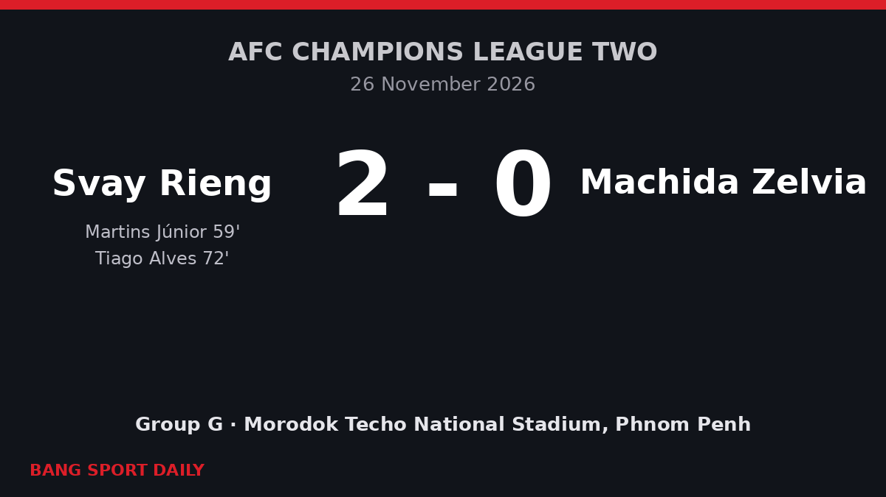

柴桢爆冷击溃町田，皇冠古晋饮恨：亚冠二级联赛第5轮综述
柴桢在金边2-0力克斯威町田泽维亚，金边皇冠客场0-3不敌古晋城；末轮两支柬埔寨球队仍将出线主动权牢牢握在自己手中

在11月26日星期四短短几个小时内，柬埔寨足球在亚洲赛场上同时体验了最极致的狂喜与苦涩。坐镇金边的柴桢（Preah Khan Reach Svay Rieng）以2-0爆冷斩落日本劲旅町田泽维亚（FC Machida Zelvia），终结了这支G组领头羊在亚冠二级联赛（ACL Two）中的不败金身；另一边，远征马来西亚的金边皇冠（Phnom Penh Crown）虽以0-3完败于古晋城（Kuching City），却依然在H组领跑。
小组赛5轮战罢，两支柬埔寨劲旅都清楚：只要在12月3日的收官战中拿到一场平局，就能昂首挺进16强淘汰赛。以下是第5轮八个小组的完整战报及各队赛后发声。
柴桢 2-0 町田泽维亚：属于柬埔寨足球的历史之夜
这场焦点战在国家德佐体育场打响。町田泽维亚此前四战全胜，其中包括首轮在主场2-0轻取柴桢。
上半场两队平分秋色。据亚足联报道，夸梅·佩普拉（Kwame Peprah）开场不久便有一脚射门滑门而过，第24分钟，柴桢门将维雷克·达拉（Vireak Dara）用左手扑出秋元（Takahiro Akimoto）的射门。柴桢上半场最好的机会属于蒂亚戈·阿尔维斯（Tiago Alves），他获得单刀机会却将球打偏。
易边再战，町田连换两人，但率先打破僵局的却是柴桢。第59分钟，亚历山德罗·马丁斯·儒尼奥尔（Alessandro Martins Júnior）在禁区边缘兜出一记刁钻的低平球，洞穿了门将谷晃生（Kosei Tani）把守的大门。13分钟后，鲁伊·皮雷斯（Rui Pires）挑传打穿町田防线，阿尔维斯反越位成功挑射破门，将比分改写为2-0！
落后的町田全力反扑。据亚足联报道，德村枫太（Futa Tokumura）的远射砸中横梁，金敏泰（Kim Min-tae）的头球攻门则击中立柱。达拉与后防线众志成城，将零封保持到了终场哨响。

柴桢的制胜之匙： 面对控球率占优的对手（ESPN数据统计显示町田控球率达56%），柴桢防守阵型保持得极其严密，并凭借下半场这致命的13分钟高效兑现机会。主教练马修·麦康基（Matthew McConkey）表示，一个小小的战术调整起了作用：“我们想引诱对手压上逼抢，因为他们一压上，身后就会出现空当，供我们进攻。”他对《金边邮报》说，“我们踢得很好，这就是我们俱乐部在这场比赛中展现出的水平。”《柬埔寨新报》（Kampuchea Thmey）撰文称，这是柬埔寨俱乐部历史上首次击败日本球队；而就在一周前，柴桢刚在东盟俱乐部锦标赛中以4-1大胜泰国狮子港（Port FC）。
町田的失利症结： 这是町田在亚冠赛场的首败，据《足球文摘》（Soccer Digest）统计，这也是他们近15场各项正式比赛中的首次失利。据《金边邮报》报道，町田主帅黑田刚表示，球队刚结束日本J1联赛赛季便启程前来，准备时间很少；据《柬埔寨新报》报道，他也提到了金边的炎热天气。但他并没有以此为借口：“我知道柴桢会在这场比赛中打防守反击，我们也为此做了准备，但我们的球员表现得还不够好。”
此役过后柴桢积10分，落后已提前出线的町田2分。柴桢的末轮战役将于12月3日客场挑战上海申花。申花目前积7分且必须取胜；而据柬埔寨媒体Troryorng报道，柴桢只要打平即可确保晋级。双方首回合在金边战成0-0平。
古晋城 3-0 金边皇冠：防反利刃下的溃败
在古晋，主队开场便掀起猛攻。据《砂拉越邮报》（Utusan Sarawak）报道，阿伊丁·穆亚吉奇（Ajdin Mujagić）开场阶段头球中柱，随后还有一粒进球因越位被吹。第32分钟，萨法威·拉希德（Safawi Rasid）为主队拔得头筹。半场结束前，古晋城门将哈齐克·纳兹利（Haziq Nadzli）做出精彩扑救，化解了皇冠的必进球。
下半场皇冠阵型前压试图扭转局势，却不幸被对手的反击彻底打穿。第75分钟，刚刚替下萨法威不到一分钟的杰罗姆·姆帕科·埃塔梅（Jerome Mpacko Etame）便反击建功；伤停补时阶段，迪伦·文策尔-霍尔斯（Dylan Wenzel-Halls）再入一球锁定胜局。
皇冠的失利总结： 主帅奥莱格·斯塔林斯基（Oleg Starynskyi）认为比分过于残酷。“这是一个难以接受的结果，因为我们的表现不应该输0-3，”他在接受亚足联采访时表示。《砂拉越邮报》援引他的话说：“对手用反击惩罚了我们，第二个丢球让局势急转直下。这个小组的竞争非常残酷。”
古晋城的成功之处： 主帅艾迪尔·沙林·萨哈克（Aidil Sharin Sahak）盛赞了队员们的战术纪律与拼搏精神，并表示这场胜利一雪此前在金边1-2落败之耻。“在金边我们本不该输，”他对亚足联说道，并补充道“球队确实在不断成长”。当选全场最佳的萨法威表示，这场胜利“不仅属于我，更属于整支球队”。
同组另一场比赛，江原FC在江陵3-2险胜杰志。杰志曾两度领先——埃韦顿（Everton Camargo）开场第1分钟破门，伊利亚拉门迪（Asier Illarramendi）下半场初段建功。据亚足联报道，金大元为江原梅开二度，并在伤停补时阶段送出助攻，由申旼河头球绝杀。
目前H组积分榜：金边皇冠9分，古晋城7分，江原FC 7分，杰志5分。12月3日，皇冠将主场迎战江原，古晋城客战杰志。按积分算，皇冠只要打平就稳获出线权；即便输球，也只有在古晋城客胜杰志的情况下才会被淘汰。
东亚区其他战况
E组： 万隆在主场3-1力克FC首尔，豪取五连胜锁定小组第一。据亚足联报道，轮换阵容的韩国冠军首尔队虽一度由莱昂纳多·鲁伊斯（Leonardo Ruiz）扳平，但半场结束前再度失守，第70分钟文宣民又被红牌罚下。“出色的防守、流畅的转换、三个精彩的进球，”万隆主帅伊戈尔·托利奇（Igor Tolic）赛后评价道。首尔主帅金基东则公开向球迷致歉。在吉朗，墨尔本胜利0-0闷平体工-越电信。胜利屡失良机，主帅吉奥瓦尼·萨瓦雷塞（Giovanni Savarese）直言球队门前需要更具“杀手本色”。这场平局让越电信提前出局。积分榜上，万隆15分，首尔6分，墨尔本胜利5分，越电信2分。12月2日首尔将主场决战墨尔本胜利。
F组： 新加坡狮城水手客场3-0完胜BG巴吞联，伊尔汗·凡迪（Ilhan Fandi）、雨果·戈麦斯（Hugo Gomes）和马蒂亚斯·法埃顿（Matthias Phaëton）各入一球，助球队提前一轮锁定小组头名。水手主帅马克·杰克逊称赞这是“全场高水准的团队表现”；巴吞联主帅披拉蓬·披奇触里拉坦承：“我们必须承认，今天我们确实技不如人。”阿德莱德联在客场7-1血洗香港大埔，20岁小将伯基特（Burkitt）上演大四喜，大埔球员保连奴被罚下。阿德莱德主帅艾尔顿·安德里奥利保持冷静：“我们目前还没赢得任何荣誉。”狮城水手积13分，阿德莱德9分，巴吞联7分。末轮阿德莱德将主场迎战巴吞联。
G组： 上海申花在新加坡客场7-1大胜淡滨尼流浪者。谢鹏飞上演帽子戏法，拉斐尔·拉唐与路易斯·阿苏埃双双梅开二度。淡滨尼由角隅征雅挽回颜面，但阿米鲁尔·海卡尔下半场开局在禁区犯规染红送点；申花的威尔逊·马纳法主罚点球砸中横梁。这场大胜让申花在末轮对阵柴桢前保留了出线希望。
西亚区其他战况
A组： 阿尔瓦赫达客场2-1逆转库威特SC，积12分锁定小组头名昂首晋级。易卜拉欣·卡米尔为主队先进一球，阿尔瓦赫达在最后半小时连入两球翻盘。“我们会战斗到最后一刻，”主帅佩里克斯·沙穆斯卡（Péricles Chamusca）赛后表示。纳萨夫在卡尔希主场凭借阿博斯容·古洛莫夫（Abbosjon Gulomov）在下半场初段的制胜球1-0击退哈利迪亚，将对手淘汰出局。纳萨夫主帅鲁济库尔·贝尔季耶夫在赛后对争议判罚表达不满：“这项赛事居然没有VAR。”目前纳萨夫积7分，库威特积6分。12月9日纳萨夫客战阿尔瓦赫达，库威特要想出线必须取胜并寄望纳萨夫丢分。
B组： 阿尔贾兹拉凭借安德森·塔利斯卡（Anderson Talisca）在第40分钟的致胜进球1-0小胜戈尔戈哈尔，积13分顺利出线。土库曼斯坦的阿卡达格同样晋级，他们客场4-2击败穆哈拉格。穆哈拉格的布鲁诺·桑托斯在第3分钟便染红离场，大半场少一人作战；达扬奇·梅列多夫（Dayanc Meredow）为阿卡达格梅开二度。积10分的阿卡达格将在末轮主场与贾兹拉争夺小组头名。
C组： 亚历山大·米特罗维奇（Aleksandar Mitrović）利用阿尔费萨里门将扑球脱手凌空扫射破门，帮助阿尔赖扬在安曼客场1-0带走胜利。大幅轮休主力的阿尔塔亚文主场0-0被阿尔纳达逼平，替补登场的哈默德（Abderrazak Hamdallah）击中门框。阿尔赖扬（12分）与阿尔塔亚文（11分）携手提前出线，末轮两队将直接交锋争夺头名。
D组： 东宾高在加尔各答1-0力克约旦的阿尔侯赛因，杰克森·辛格（Jeakson Singh）在第87分钟角球进攻中打入绝杀。据Khel Now与The Open Press报道，这是印度俱乐部在亚冠二级联赛历史上的首场胜利。全场占优的阿尔侯赛因四次中柱，并且多次被对方门将普尔巴·拉钦帕（Phurba Lachenpa）神勇化解。“在这项赛事中，好运终于站在了我们这边一次，”主帅安东尼奥·哈巴斯（Antonio Habas）赛后感叹。阿曼的锡卜主场2-0击败阿尔绍尔塔，送给这支已积10分提前出线的伊拉克强队小组赛首败。锡卜目前积7分，末轮将客战阿尔侯赛因（5分），东宾高（5分）则将客战阿尔绍尔塔。
出线形势前瞻
东亚区小组赛将于12月2日至3日收官，西亚区则在12月8日至9日迎来最终对决，各组前两名跻身16强淘汰赛。对于柬埔寨足球而言，命运就寄托在同日打响的两场战役上：柴桢远征客战申花，皇冠坐镇主场迎击江原——一场平局，即可载入史册。